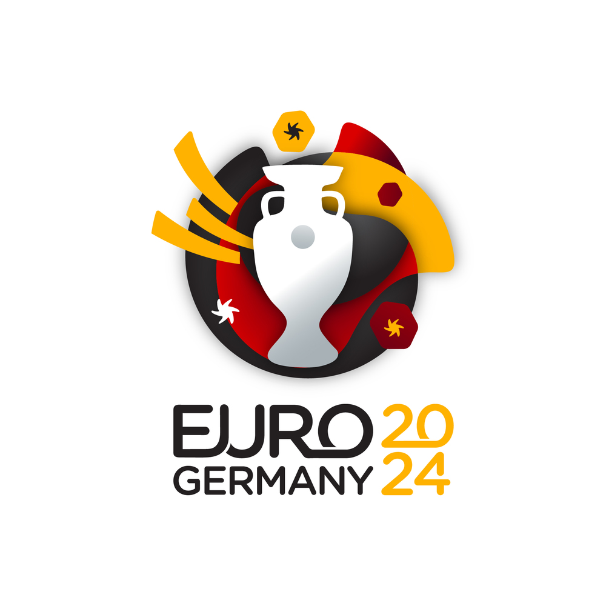

FIFA WORLD CUP QATAR 2022

The 2022 FIFA World Cup is scheduled to be the 22nd running of the FIFA World Cup competition, the quadrennial international men's football championship contested by the national teams of the member associations of FIFA. It is scheduled to take place in Qatar from 21 November to 18 December 2022. This will be the first World Cup ever to be held in the Arab world, and it will be the second World Cup held entirely in Asia after the 2002 tournament was held in South Korea and Japan. In addition, the tournament will be the last to involve 32 teams, with an increase to 48 teams scheduled for the 2026 tournament in the United States, Mexico, and Canada. The reigning World Cup champions are France.
UEFA EURO 2024 GERMANY
The 2024 UEFA European Football Championship, commonly referred to as UEFA Euro 2024 (stylised as UEFA EURO 2024) or simply Euro 2024, will be the 17th edition of the UEFA European Championship, the quadrennial international men's football championship of Europe organised by UEFA. Germany will host the tournament, which is scheduled to take place from 14 June to 14 July 2024. It would be the third time that European Championship matches are played on German territory and the second time in reunified Germany as the former West Germany hosted the tournament of 1988, and four matches of the multi-national Euro 2020 were played in Munich; however, it would be the first time the competition is held in the former East Germany with Leipzig as a host city. Italy are the defending champions going into the tournament.
COPA AMERICA ECUADOR 2024

The 2024 Copa América will be the 48th edition of the Copa América, the quadrennial international men's football championship organized by South America's football ruling body CONMEBOL. Argentina are the defending champions.
The 2024 Copa América is expected to be hosted by Ecuador due to CONMEBOL's host rotation order. However, CONMEBOL president Alejandro Dominguez said that Ecuador had been nominated but not yet chosen to organize the cup. Peru has also expressed its intention to organize the tournament. The 2024 Copa América was originally scheduled for 2023, but was moved to 2024 in order to coincide with UEFA Euro 2024.